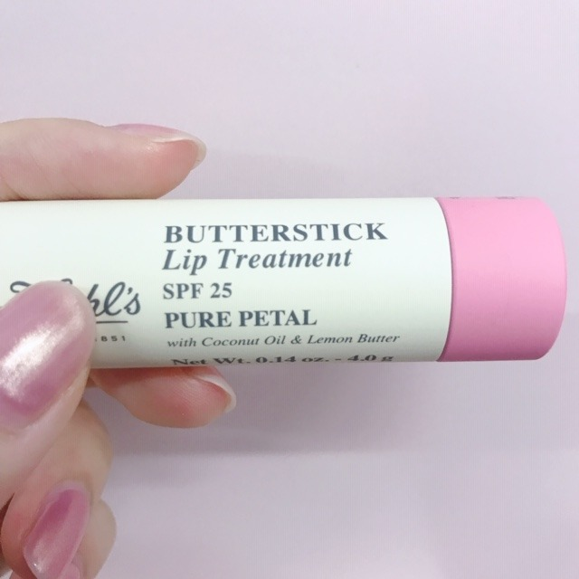
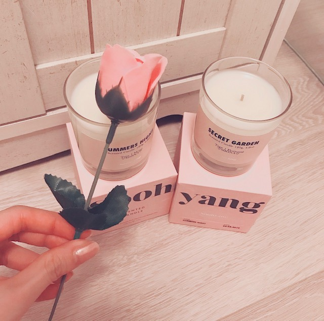
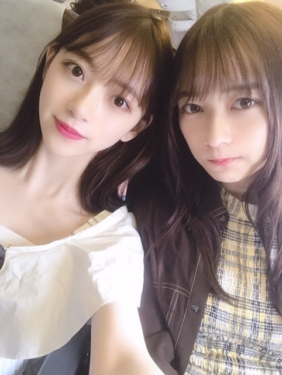
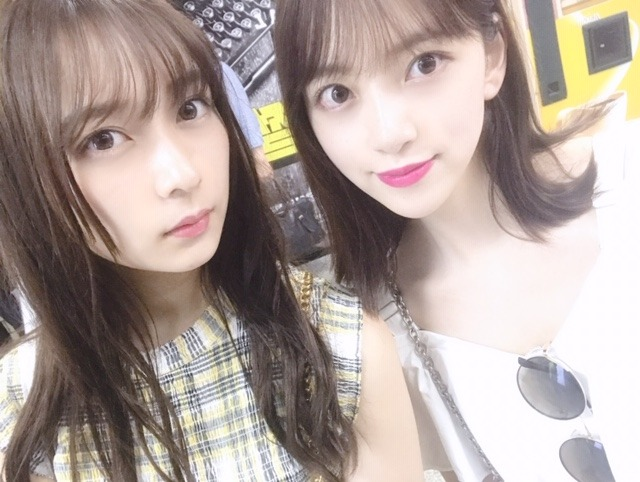
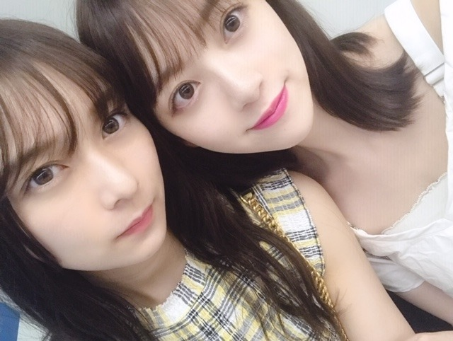

2019/0825Sun#24時間TV
こんにちは。
数日間、吐き気と目まいに襲われていて
たくさんの方にご心配とご迷惑をおかけしています、、
喉の薬の副作用と軽い熱中症らしいので
今はたくさんお水を飲んで安静にしています☺︎
ライブでは万全の状態で皆さんにお会いできるよう早く治します！
ご心配をおかけしてごめんなさい、、
最近は髪にもUVのスプレーを、
唇にもUVケアのものをつけています☺︎

キールズのリップクリームは
淡いピンクの色付きでSPF25 の唇のナチュラルな血色感もだしつつ、紫外線から唇を守ってくれる
有能リップクリームさんです❤︎
この他にも愛用しているリップクリームはたくさんありますが最近はこれがお気に入り

あとは堀家に新しいキャンドルも増えました！
たくさん種類のある中から
"SUMMERS NIGHT" "SECRET GARDEN"
の香りを選びました☺︎
絢音とお揃い~
そしてよーく見ると実はラベルに
♡MIONA♡
って入ってます！
メッセージや名前をラベルに入れられるキャンドル屋さんなの~ かわいいすぎる、
夜はアロマキャンドルに癒されてます...❤︎

キャンドルをそれぞれ選んでたのに
好きな匂いが結局同じで。笑 さすが☺︎❤︎
6年間ずっと一緒にいても
嫌なところなんて1つもないあやねちん
いつも体調を心配してくれたり嬉しいことがあると
1番に言ってきてくれたり
これからも、おばあちゃんになっても
仲良くしたいな~


このあと、24時間TVに出させていただきます！
わたしも朝から目玉焼きとお味噌汁と梨を食べながら少し観てきました。楽屋でも準備しながらみんなで観たよ。
是非、見てください☺︎
では
2019/08/25 13:54
コメント(404)
昨日の全握行ったよー
忙しかったり、体調が悪かったりする中更新ありがとう！
これからも、体調気をつけて頑張ってね
応援してます！
ではでは
忙しかったり、体調が悪かったりする中更新ありがとう！
これからも、体調気をつけて頑張ってね
応援してます！
ではでは
ブログ更新ありがとうございます！！
無理せずに思いっきり休んでください。
熱中症対策には、経口補水液のゼリータイプがいいと思います！
無理せずに思いっきり休んでください。
熱中症対策には、経口補水液のゼリータイプがいいと思います！
お疲れ様です!
24時間TV見たよぉ。とっても楽しみだったけど、それ以上に堀ちゃんの体調が何より心配だった...(。>д<) けど、とにかく無事体調も回復して番組でも歌って踊ってる堀ちゃんの姿見れてホッとしたぁ(*´-`) お仕事も大事だけど、頑張りすぎないでなるべくゆっくり体休めてあげてねぇ☆
みおな
今日もお疲れ様です
ここ最近の体の不調は、結構辛いみたいですが、大丈夫ですか？
お盆明けから暑さは和らいでますが熱中症には気をつけて下さい
24時間テレビ観てました
sing out！と一瞬だけみおなが募金の所にいるのが観れました
テレビで観る限り、元気そうだったので安心してます
俺は、心配する事や応援する事しかできないけど、早く治るように祈ってます
安定コンビのあやねちゃんに支えてもらいながら頑張って下さい
神宮ライブ楽しみにしてるよ！
ありがとうございました
今日もお疲れ様です
ここ最近の体の不調は、結構辛いみたいですが、大丈夫ですか？
お盆明けから暑さは和らいでますが熱中症には気をつけて下さい
24時間テレビ観てました
sing out！と一瞬だけみおなが募金の所にいるのが観れました
テレビで観る限り、元気そうだったので安心してます
俺は、心配する事や応援する事しかできないけど、早く治るように祈ってます
安定コンビのあやねちゃんに支えてもらいながら頑張って下さい
神宮ライブ楽しみにしてるよ！
ありがとうございました
心配することしかできないってほんともどかしくなる！
早め早めが肝心
無理しないでね。
キャンドルもとてもかわいいです！
神宮行けないけれどLVは行けるかもしれないので
楽しみにしています。
早め早めが肝心
無理しないでね。
キャンドルもとてもかわいいです！
神宮行けないけれどLVは行けるかもしれないので
楽しみにしています。
こんばんは。セブンだよ(ฅ'ω'ฅ)♪
今日も1日おつかれさま
24時間TV観たよ
体調悪いのにがんばってすごいです！
偉いぞ！みおちゃん！
ライブまでには良くなるといいね
では、明日も1日楽しもうd(@^∇ﾟ)/ﾌｧｲﾄｯ♪
おやすみおな☪️
今日も1日おつかれさま
24時間TV観たよ
体調悪いのにがんばってすごいです！
偉いぞ！みおちゃん！
ライブまでには良くなるといいね
では、明日も1日楽しもうd(@^∇ﾟ)/ﾌｧｲﾄｯ♪
おやすみおな☪️
みおな、こんばんは。
大丈夫ですか？気をつけて下さいよね。
少しでも、えらいと感じたら、無理せず、休まなきゃ駄目だよ。
健康な体があっての仕事なんですからね。
僕も無理しがちだから、今後は気をつけます。
大丈夫ですか？気をつけて下さいよね。
少しでも、えらいと感じたら、無理せず、休まなきゃ駄目だよ。
健康な体があっての仕事なんですからね。
僕も無理しがちだから、今後は気をつけます。
未央奈さんこんばんは
24時間テレビお疲れ様でした！
可愛くて 綺麗で 強い 未央奈さんからいつも元気と癒しを頂いてます✨本当にありがとうございます！
未央奈さんも癒しの絢音さんとアロマに元気を貰って早く良くなってくださいね✨
24時間テレビお疲れ様でした！
可愛くて 綺麗で 強い 未央奈さんからいつも元気と癒しを頂いてます✨本当にありがとうございます！
未央奈さんも癒しの絢音さんとアロマに元気を貰って早く良くなってくださいね✨
こんばんは。ブログ更新ありがとうございます。
24時間TV、乃木坂46も出演しているのはちらっと見れましたが、しっかりとは見られませんでした。録画しておけば良かったです。
全握欠席と聞いて心配しましたが、お医者にかかったようなので安心しました。全ツのラストまで1週間を切りましたからね、くれぐれもお大事に。
ではまた。
24時間TV、乃木坂46も出演しているのはちらっと見れましたが、しっかりとは見られませんでした。録画しておけば良かったです。
全握欠席と聞いて心配しましたが、お医者にかかったようなので安心しました。全ツのラストまで1週間を切りましたからね、くれぐれもお大事に。
ではまた。
みおな更新ありがとう！
全握体調悪いのにでてくれてありがとう！
でも身体は大事にね！
次の全握（幕張）も行きまーす！
次はみおなの誕生日の5日後かぁ
22才もやり残すことが無いようにあと2カ月頑張ってね！
全握体調悪いのにでてくれてありがとう！
でも身体は大事にね！
次の全握（幕張）も行きまーす！
次はみおなの誕生日の5日後かぁ
22才もやり残すことが無いようにあと2カ月頑張ってね！
薬の副作用と熱中症ですか、大変ですね。ゆっくりもできないかもしれませんが、お大事に。
未央奈～☆☆
キャンドル、オシャレだな～
思わず名前から香りを想像してみたけど
たぶん実際の香りとは違うんだろうなー笑
それにしても、
絢音ちゃんと２つとも同じ香りを選んだなんて
気も好みもめちゃくちゃ合うんだね。
これだけ仲のいい人が身近にいて
本当によかったね！
体調の方は大丈夫？
色々重なってたみたいだから結構辛かったんじゃない？
でも原因が分かってちょっと安心したよ。
あとは、あせらずしっかり治していってね。
キャンドル、オシャレだな～
思わず名前から香りを想像してみたけど
たぶん実際の香りとは違うんだろうなー笑
それにしても、
絢音ちゃんと２つとも同じ香りを選んだなんて
気も好みもめちゃくちゃ合うんだね。
これだけ仲のいい人が身近にいて
本当によかったね！
体調の方は大丈夫？
色々重なってたみたいだから結構辛かったんじゃない？
でも原因が分かってちょっと安心したよ。
あとは、あせらずしっかり治していってね。
かやいい！
ゆっくり休んでな！
24時間テレビお疲れ様！
体調悪い中よく頑張ったね(^^)
プライベートが充実してそうで何より！
ライブまでにゆっくり療養してね
体調悪い中よく頑張ったね(^^)
プライベートが充実してそうで何より！
ライブまでにゆっくり療養してね
堀ちゃんこんばんは！
24時間TV観ましたー！
今日はポニテの堀ちゃん！麗しかったですー！( ´ ▽ ` )♩
ちょうど夏の終わりに爽やか可愛い堀ちゃんのポニテが見たいと思っていたんです、ありがとうございます！(o^^o)笑
堀ちゃんは首と輪郭が綺麗なのでポニテがより映えますね〜、ほんとに可愛い！
でも堀ちゃんのポニテは可愛いだけじゃなくて芸術の域に達しています、決して大げさではなく( ´ ▽ ` )
フォルムの綺麗さもさることながら、踊っているときの揺れ方まで全部見惚れます(o^^o)
いつも抜群に可愛い堀ちゃんを見せてくれてありがとうございます( ´ ▽ ` )♩
そしてもう来週は神宮ライブですねー！
夜も涼しくなってきて夏の終わりを感じて少し寂しい気もします( ´ ー ` )
京セラライブで既に最高の夏にはなっていますが、きっともっと神宮で素敵な夏になる予感がしています(o^^o)♩
きっと堀ちゃんと目が合ったら信じられないぐらいハシャいじゃうんだろうなぁ( ´ ▽ ` )笑
堀ちゃんうちわと堀ちゃんタオルを備えて熱い視線を送るので、どうか神様よろしくお願いします！(o^^o)笑
一緒に最高の夏の思い出つくりましょう(^^)♩
体調は大丈夫でしょうか？
まだまだ暑い日もあり、夜はいつのまにか涼しかったりするので体調を崩してしまうのも無理はないです(>_<)
もちろん心配はめちゃくちゃしていますが謝らないでくださいな、好きな人のことを心配できるっていうのも幸せなんです( ´ ー ` )
ライブに堀ちゃんがいるのがもちろん1番嬉しいですが、その日までにはと焦ったりプレッシャーは感じる必要はないですよ、いつだって堀ちゃんの健康が1番、なので今は体も心も甘やかしてください(^^)
でも、堀ちゃん自身が完璧な状態でライブに出たいという想いも強いと思うので、その面は全力で後押ししたいです(o^^o)
リラックスして前向きに、肩肘張らずにゆっくり進む
矛盾してること言ってるかもしれません、すみません( ´ ▽ `; )
熱中症には水分と塩分、できれば水よりも経口補水液などをちょこちょこ摂取するのがいいです、あと梅干しや麦茶も効果的です(o^^o)
最近では塩分補給の飴やタブレットもあるみたいですね( ´ ▽ ` )
喉には大根おろしやこちらも梅干し、特に梅干しはレンジなどで熱を通すとより効果的らしいです！
長々と書いてしまいましたがよかったらお試しください(o^^o)
では、今日よりも明日、明日よりも明後日、どんどん堀ちゃんの体調が良くなりますように！祈ってます！
堀ちゃんが1秒でも多く笑顔で過ごせますように！
24時間TV観ましたー！
今日はポニテの堀ちゃん！麗しかったですー！( ´ ▽ ` )♩
ちょうど夏の終わりに爽やか可愛い堀ちゃんのポニテが見たいと思っていたんです、ありがとうございます！(o^^o)笑
堀ちゃんは首と輪郭が綺麗なのでポニテがより映えますね〜、ほんとに可愛い！
でも堀ちゃんのポニテは可愛いだけじゃなくて芸術の域に達しています、決して大げさではなく( ´ ▽ ` )
フォルムの綺麗さもさることながら、踊っているときの揺れ方まで全部見惚れます(o^^o)
いつも抜群に可愛い堀ちゃんを見せてくれてありがとうございます( ´ ▽ ` )♩
そしてもう来週は神宮ライブですねー！
夜も涼しくなってきて夏の終わりを感じて少し寂しい気もします( ´ ー ` )
京セラライブで既に最高の夏にはなっていますが、きっともっと神宮で素敵な夏になる予感がしています(o^^o)♩
きっと堀ちゃんと目が合ったら信じられないぐらいハシャいじゃうんだろうなぁ( ´ ▽ ` )笑
堀ちゃんうちわと堀ちゃんタオルを備えて熱い視線を送るので、どうか神様よろしくお願いします！(o^^o)笑
一緒に最高の夏の思い出つくりましょう(^^)♩
体調は大丈夫でしょうか？
まだまだ暑い日もあり、夜はいつのまにか涼しかったりするので体調を崩してしまうのも無理はないです(>_<)
もちろん心配はめちゃくちゃしていますが謝らないでくださいな、好きな人のことを心配できるっていうのも幸せなんです( ´ ー ` )
ライブに堀ちゃんがいるのがもちろん1番嬉しいですが、その日までにはと焦ったりプレッシャーは感じる必要はないですよ、いつだって堀ちゃんの健康が1番、なので今は体も心も甘やかしてください(^^)
でも、堀ちゃん自身が完璧な状態でライブに出たいという想いも強いと思うので、その面は全力で後押ししたいです(o^^o)
リラックスして前向きに、肩肘張らずにゆっくり進む
矛盾してること言ってるかもしれません、すみません( ´ ▽ `; )
熱中症には水分と塩分、できれば水よりも経口補水液などをちょこちょこ摂取するのがいいです、あと梅干しや麦茶も効果的です(o^^o)
最近では塩分補給の飴やタブレットもあるみたいですね( ´ ▽ ` )
喉には大根おろしやこちらも梅干し、特に梅干しはレンジなどで熱を通すとより効果的らしいです！
長々と書いてしまいましたがよかったらお試しください(o^^o)
では、今日よりも明日、明日よりも明後日、どんどん堀ちゃんの体調が良くなりますように！祈ってます！
堀ちゃんが1秒でも多く笑顔で過ごせますように！
ほりっぴ～、ナンチです♪
24HTVお疲れ様
体調は大丈夫かな
神宮も近いので身体休めてね
神宮でのほりっぴ～のパフォをめっちゃ楽しみにしてます
24HTVお疲れ様
体調は大丈夫かな
神宮も近いので身体休めてね
神宮でのほりっぴ～のパフォをめっちゃ楽しみにしてます
よっ！
水分は多めにとりなよ。
できれば塩分が入ってて甘さが少ないもので。
元気そうでよかったけど。
俺は最近体がダルくて、疲れがすぐ出るけど。
なかなかうまく文章まとめられなくてゴメン！
また、コメントするよ
無理しないように。
未央奈、応援してるよ、いつも。
じゃあね！
水分は多めにとりなよ。
できれば塩分が入ってて甘さが少ないもので。
元気そうでよかったけど。
俺は最近体がダルくて、疲れがすぐ出るけど。
なかなかうまく文章まとめられなくてゴメン！
また、コメントするよ
無理しないように。
未央奈、応援してるよ、いつも。
じゃあね！
心做しか目腫れてる気がしたけど気のせいかなあ
とりあえず体調1番なんで！休める時ゆっくり休んでくださいね
とりあえず体調1番なんで！休める時ゆっくり休んでくださいね
堀さん、こんばんは。ブログ更新してくれて嬉しいです。
鈴木さんと同じ匂いを選んでたの凄いですね。きっとキャンドル以上にお互いが相手の癒しなのかもしれないですね。二人が寄り添い合ってる写真は可愛さが増幅し合ってて僕の癒しです。
24時間テレビのメドレー見ました。TOMORROWと夢をあきらめないでが最高に良かったです。人を元気付ける歌なのが乃木坂にとても合ってました。
あとSingOutが始まるときのターン後の表情がすっごく良かったです。力強い目線から目が離せなかったです。SingOut自体も遠泳にも24時間テレビにもテーマソングかなってくらい合ってました。
安静にしてられる時間がどれほど取れるのか分かりませんが、番組でしっかりパフォーマンスをした分も、身体を休めてくださいね。
鈴木さんと同じ匂いを選んでたの凄いですね。きっとキャンドル以上にお互いが相手の癒しなのかもしれないですね。二人が寄り添い合ってる写真は可愛さが増幅し合ってて僕の癒しです。
24時間テレビのメドレー見ました。TOMORROWと夢をあきらめないでが最高に良かったです。人を元気付ける歌なのが乃木坂にとても合ってました。
あとSingOutが始まるときのターン後の表情がすっごく良かったです。力強い目線から目が離せなかったです。SingOut自体も遠泳にも24時間テレビにもテーマソングかなってくらい合ってました。
安静にしてられる時間がどれほど取れるのか分かりませんが、番組でしっかりパフォーマンスをした分も、身体を休めてくださいね。
みおな、こんばんは。更新ありがとう！近況報告ありがとうございます。体調早く良くなりますように！ では、毎日みおなに良いこと沢山ありますように！ おやすみおな！！
御大事にして下さい～
お大事にね！！ (^_-)-☆
いつも アクティブなブログ更新 お疲れ様！！ (^_^)v
自分の特性を知って 健康管理 して下さい！！ (^。^)y-.。o○
━━━━━━━━━━━━━━━━━━━━
僕は、
①胃が時々調子悪くなるので、漢方の置き薬 飲んでます。
②毎日の栄養ドリンク（高額のもので無い）。
③自分への ★☆★ 体への投資 ★☆★ として サプリメント。
・ビタミン、ブルーベリー、血液サラサラ、青汁etc.
※80-20失格で、だいたい野菜が食べられない！！
なにせ アラ還だから……
━━━━━━━━━━━━━━━━━━━━
24節気も処暑（暑さが峠をこえておさまってくる頃）となり、
秋も近い。
十分体に気を付け、ご活躍下さい！！ ばいばい (@^^)/~~~
いつも アクティブなブログ更新 お疲れ様！！ (^_^)v
自分の特性を知って 健康管理 して下さい！！ (^。^)y-.。o○
━━━━━━━━━━━━━━━━━━━━
僕は、
①胃が時々調子悪くなるので、漢方の置き薬 飲んでます。
②毎日の栄養ドリンク（高額のもので無い）。
③自分への ★☆★ 体への投資 ★☆★ として サプリメント。
・ビタミン、ブルーベリー、血液サラサラ、青汁etc.
※80-20失格で、だいたい野菜が食べられない！！
なにせ アラ還だから……
━━━━━━━━━━━━━━━━━━━━
24節気も処暑（暑さが峠をこえておさまってくる頃）となり、
秋も近い。
十分体に気を付け、ご活躍下さい！！ ばいばい (@^^)/~~~
未央奈ちゃん大丈夫？
あまり無理はしないでね。
24時間テレビ見たよー！
体調悪いのに頑張ってたね。(>_<)
ほんとプロのアイドルだよ！
未央奈ちゃんの身体が早く良くなりますよーに。
あまり無理はしないでね。
24時間テレビ見たよー！
体調悪いのに頑張ってたね。(>_<)
ほんとプロのアイドルだよ！
未央奈ちゃんの身体が早く良くなりますよーに。
健康第一よ！！
堀ちゃん、体調回復して良かった。24時間テレビで見て
少し安心しました。全国握手会で具合悪くて握手出来なかった
のは残念でしたが、具合悪いのに無理する必要はないので
良かったと思います。週末はいよいよ神宮だね！
チケット ありませんが。応援してます。いいライブになり
ますように。
少し安心しました。全国握手会で具合悪くて握手出来なかった
のは残念でしたが、具合悪いのに無理する必要はないので
良かったと思います。週末はいよいよ神宮だね！
チケット ありませんが。応援してます。いいライブになり
ますように。
漢方がいいと思うよ～
詳しくはれなちさんに(笑)
詳しくはれなちさんに(笑)
ただでさえ多忙なのに暑さまで加わって大変だけど、本当に未央奈ちゃんには元気でいてほしいです。
無理しないで下さい。応援してます！
無理しないで下さい。応援してます！
未央奈ちゃん、今日もお疲れ様です＞＜ゞ
Σ＠＠；
未央奈ちゃん、大丈夫！？
吐き気と目まいって聞いただけで、フラフラクラクラしちゃうんだけど
とりあえず元気そうで良かったー
あら～、未央奈ちゃんと絢音ちゃん、相思相愛♡
こちらの付け入る隙が全く無くてヤキモチ焼いちゃう♡
一緒にいて全くストレスも感じる事なく一緒にいられるのだから
２人とも吉永小百合さんの様ないつまでも綺麗な女性になっていそう♡
キャンドルの様にいつまでも甘～い関係の２人でありますように♡
Σ＠＠；
未央奈ちゃん、大丈夫！？
吐き気と目まいって聞いただけで、フラフラクラクラしちゃうんだけど
とりあえず元気そうで良かったー
あら～、未央奈ちゃんと絢音ちゃん、相思相愛♡
こちらの付け入る隙が全く無くてヤキモチ焼いちゃう♡
一緒にいて全くストレスも感じる事なく一緒にいられるのだから
２人とも吉永小百合さんの様ないつまでも綺麗な女性になっていそう♡
キャンドルの様にいつまでも甘～い関係の２人でありますように♡
おはようございます‼︎
ブログ更新、ありがとうございます♪
体調はいかがですか？
少しは良くなっているといいんだけど。
くれぐれも無理はしないでくださいね‼︎
一昨日、幕張メッセで未央奈の体調不良のアナウンスが流れて。
大丈夫かなあって心配してました。
最近は急激に気温が上がったり下がったりして、体がついていけず具合が悪くなることがよくあるみたいです。
まずは十分な睡眠と、バランスのよい食事と、こまめな水分補給ですね♪
忙しいとなかなか気が回らなくなったりしてしまいますが、頑張っていきましょう…‼︎
好きなキャンドルの香りが同じだったり、体調に気を遣ってくれたり。
絢音ちゃんとは、常に心が通じ合っているんですね♪
ファンも、辛い時や苦しい時に寄り添うことができるのが真のファンだと思っています。
自分も未央奈にとって、そういうファンでいたい。
もちろん、絢音ちゃんには敵わないけどね(笑)。
これからも神宮のライブとか、日程的にも大変だと思うけど、自分を大切にして、無理せず頑張ってください…‼︎
応援してます♪
ではでは、また。
今日も未央奈にとっていい1日になりますように♪
ブログ更新、ありがとうございます♪
体調はいかがですか？
少しは良くなっているといいんだけど。
くれぐれも無理はしないでくださいね‼︎
一昨日、幕張メッセで未央奈の体調不良のアナウンスが流れて。
大丈夫かなあって心配してました。
最近は急激に気温が上がったり下がったりして、体がついていけず具合が悪くなることがよくあるみたいです。
まずは十分な睡眠と、バランスのよい食事と、こまめな水分補給ですね♪
忙しいとなかなか気が回らなくなったりしてしまいますが、頑張っていきましょう…‼︎
好きなキャンドルの香りが同じだったり、体調に気を遣ってくれたり。
絢音ちゃんとは、常に心が通じ合っているんですね♪
ファンも、辛い時や苦しい時に寄り添うことができるのが真のファンだと思っています。
自分も未央奈にとって、そういうファンでいたい。
もちろん、絢音ちゃんには敵わないけどね(笑)。
これからも神宮のライブとか、日程的にも大変だと思うけど、自分を大切にして、無理せず頑張ってください…‼︎
応援してます♪
ではでは、また。
今日も未央奈にとっていい1日になりますように♪
体調万全で歌って踊っている未央奈さんが神宮で見られることを切に願っています！
私は現地には行けませんが、遠くから応援させていただきます。
私は現地には行けませんが、遠くから応援させていただきます。
体調不良で握手会欠席って言ってたから心配だったけど
昨日の24時間TVで元気な姿が見れて少し安心しました
最近私も鼻水と咳とに悩まされてます。
お互い、体調には気をつけましょう(笑)
昨日の24時間TVで元気な姿が見れて少し安心しました
最近私も鼻水と咳とに悩まされてます。
お互い、体調には気をつけましょう(笑)
堀ちゃん、大好きだよー
吐き気と、めまい、、薬の副作用(?_?)or熱中症？
みお造も薬アレルギーがあるので病院で処方される薬なんかはおっかなびっくり飲んでる(;´д｀)
副作用が出たときは超最悪です
未央奈も気をつけてね(^∇^)！
堀ちゃんブログありがと！
体調気をつけてくださいね
体調気をつけてくださいね
未央奈ちゃん、ひろっしーです！コメント投稿607回目です！
前回はブログ「お腹がすいてどうにかなりそう」にモバメとブログの感想を書きました！
時間→「No.277 2019年8月25日 01:37」
ブログ更新ありがとうございます！
数日間、吐き気と目まい、副作用と熱中症！？
「24時間テレビ」に出演されていたのを観て全然そんな風に見えなかったので、そんな状態だったなんて知りませんでした！
今は身体を休める事だけを考えて、出来るだけ安静に過ごして下さいね！
パフォーマンスとても良かったです！応援歌を3曲も披露して下さりありがとうございます！
お忙しい中、曲も振りも覚えてお疲れ様です！
最後に翔ちゃんが「ララララランラ」って口ずさんでいましたよ！いやぁ、凄く嬉しいです！
よく見ると確かに名前書いてありました！
なんかめっちゃオシャレですね！女子だな～！お揃いのキャンドルを選んじゃうって凄いね！
あと、6年間ずっと一緒にいても嫌な所が何も無いのも凄いね！絢音ちゃん優しすぎるよ～！この関係性が、本当におばあちゃんになってもずっと続く事を願っています！
髪切れると良いね！ボブ未央奈早く見たいな！
ここまで読んで頂きありがとうございました！
毎日お仕事お疲れ様です！体調にはくれぐれも気を付けて頑張ってくださいね！
ではでは！
前回はブログ「お腹がすいてどうにかなりそう」にモバメとブログの感想を書きました！
時間→「No.277 2019年8月25日 01:37」
ブログ更新ありがとうございます！
数日間、吐き気と目まい、副作用と熱中症！？
「24時間テレビ」に出演されていたのを観て全然そんな風に見えなかったので、そんな状態だったなんて知りませんでした！
今は身体を休める事だけを考えて、出来るだけ安静に過ごして下さいね！
パフォーマンスとても良かったです！応援歌を3曲も披露して下さりありがとうございます！
お忙しい中、曲も振りも覚えてお疲れ様です！
最後に翔ちゃんが「ララララランラ」って口ずさんでいましたよ！いやぁ、凄く嬉しいです！
よく見ると確かに名前書いてありました！
なんかめっちゃオシャレですね！女子だな～！お揃いのキャンドルを選んじゃうって凄いね！
あと、6年間ずっと一緒にいても嫌な所が何も無いのも凄いね！絢音ちゃん優しすぎるよ～！この関係性が、本当におばあちゃんになってもずっと続く事を願っています！
髪切れると良いね！ボブ未央奈早く見たいな！
ここまで読んで頂きありがとうございました！
毎日お仕事お疲れ様です！体調にはくれぐれも気を付けて頑張ってくださいね！
ではでは！
やほう♡
24時間テレビ観ましたよー！
応援ソングメドレー素敵でした！！
Sing Out！とっても元気が出ました☆
Tシャツ姿とっても爽やかでしたし、
ポニーテール姿も可愛いらしかったです♡
2期生の姿も沢山見られて頼もしかったし、
メンバーの集合写真も微笑ましかったです☆
何よりも、、
みおちゃんの姿が見られて嬉しかったです♡
髪を切ったら気分転換になるかもですね～☺
24時間テレビ観ましたよー！
応援ソングメドレー素敵でした！！
Sing Out！とっても元気が出ました☆
Tシャツ姿とっても爽やかでしたし、
ポニーテール姿も可愛いらしかったです♡
2期生の姿も沢山見られて頼もしかったし、
メンバーの集合写真も微笑ましかったです☆
何よりも、、
みおちゃんの姿が見られて嬉しかったです♡
髪を切ったら気分転換になるかもですね～☺
体調には本当に気をつけてね(^^;
2期生愛･･･聞く度に涙が出る程嬉しい気持ちになるよ～…>_<…
2期生愛･･･聞く度に涙が出る程嬉しい気持ちになるよ～…>_<…
みおなちゃん、こんにちは。
BRODY、僕は買ったよ。みり愛ちゃんとの対談記事、僕は読んだよ。すばらしい対談でした。みおなちゃん、新制服似合っていて、めっちゃかわいかったよ。
みおなちゃん、体調に気をつけて仕事頑張ってね。
またコメントするね。
BRODY、僕は買ったよ。みり愛ちゃんとの対談記事、僕は読んだよ。すばらしい対談でした。みおなちゃん、新制服似合っていて、めっちゃかわいかったよ。
みおなちゃん、体調に気をつけて仕事頑張ってね。
またコメントするね。
こんにちは〜
、、少しずつ、、朝、、晩は、、涼しくなってきたね〜
、、まだ、、夏休みが、、残っているから、、中学生の女の子が、、
、、電車中で、、色々話をしていて〜好きなタイプは、まる顔で、、（笑）ヤセた人、、（笑）とか、、好きなこと、、言っていた。。
、、じゃあ、、体調に注意して、、ライブ、、頑張ってね〜
、、少しずつ、、朝、、晩は、、涼しくなってきたね〜
、、まだ、、夏休みが、、残っているから、、中学生の女の子が、、
、、電車中で、、色々話をしていて〜好きなタイプは、まる顔で、、（笑）ヤセた人、、（笑）とか、、好きなこと、、言っていた。。
、、じゃあ、、体調に注意して、、ライブ、、頑張ってね〜
未央奈ちゃんブログありがとう！
体調大丈夫？くれぐれも無理せずにゆっくり治していってね(^^)
やっぱり長く一緒にいると好みのものも似てくるものなんですかね^ ^
共通点があると人ってやっぱり親近感湧くし、その人に興味が湧きますよね
24時間TVのテーマがまさにそんな感じでしたよね、人と人。
人とのつながりって大切なんだなと24時間TV見て改めて感じました(^_^)v
応援歌メドレー良かったです！スカートがそれぞれ色鮮やかでキレイでした！やっぱりSing Outを聴くと元気が出ます(*^^*)
ほんと名曲ですね！
これからも健康第一で、体調に気をつけて頑張ってください！
体調大丈夫？くれぐれも無理せずにゆっくり治していってね(^^)
やっぱり長く一緒にいると好みのものも似てくるものなんですかね^ ^
共通点があると人ってやっぱり親近感湧くし、その人に興味が湧きますよね
24時間TVのテーマがまさにそんな感じでしたよね、人と人。
人とのつながりって大切なんだなと24時間TV見て改めて感じました(^_^)v
応援歌メドレー良かったです！スカートがそれぞれ色鮮やかでキレイでした！やっぱりSing Outを聴くと元気が出ます(*^^*)
ほんと名曲ですね！
これからも健康第一で、体調に気をつけて頑張ってください！
かわいい
元気になりますように。
未央奈可愛いね！神宮楽しみだよ。ブログ更新ありがとう〜
未央奈ちゃん、ブログ更新ありがとうございます！
24時間テレビ、観ましたよ！
まず、元気な姿を観られて、安心しました。
そして、今回もたくさん映るシーンがありましたが、とても可愛かったですし、素敵なパフォーマンスでした！
絢音ちゃんとの関係性、素敵ですよね！
2期生の地方組として、初期からずっと仲良しですが、これだけ長い時間ずっと一緒にいても、嫌なところが一つもないというのは、とてもすごいことだと思いますし、きっとおばあちゃんになっても、いつまでも仲の良い関係性なのでしょうね！
一生の友に出会えたことは、とても幸せなことですね！！
神宮でのライブ、近づいてきましたね！
今のところ3日間とも晴れの予報ですね。
ライブ、楽しみにしています！！
未央奈ちゃん、大好きです
24時間テレビ、観ましたよ！
まず、元気な姿を観られて、安心しました。
そして、今回もたくさん映るシーンがありましたが、とても可愛かったですし、素敵なパフォーマンスでした！
絢音ちゃんとの関係性、素敵ですよね！
2期生の地方組として、初期からずっと仲良しですが、これだけ長い時間ずっと一緒にいても、嫌なところが一つもないというのは、とてもすごいことだと思いますし、きっとおばあちゃんになっても、いつまでも仲の良い関係性なのでしょうね！
一生の友に出会えたことは、とても幸せなことですね！！
神宮でのライブ、近づいてきましたね！
今のところ3日間とも晴れの予報ですね。
ライブ、楽しみにしています！！
未央奈ちゃん、大好きです
未央奈さん、録画してですが24時間TV見ましたよ。
少し回復したから出演したと思いますが、体調にはどうぞ気を付けて無理せずに。
神宮までには今よりもっと、体調が良くなるように願ってエールを送りますね。
(#^.^#)
CRYSTALより。
少し回復したから出演したと思いますが、体調にはどうぞ気を付けて無理せずに。
神宮までには今よりもっと、体調が良くなるように願ってエールを送りますね。
(#^.^#)
CRYSTALより。
未央奈ちゃんブログ更新ありがとう
体調の方は大丈夫ですか？
体調が悪い時ってネガティブになってしまい
物事を悪い方向に悪い方向に
考えてしまいがちですが
（私だけかもしれないけど、、）
体が資本なので
無理せずゆっくり休んでね
疲れた時は立ち止まることも大切だと思います
とても有能なリップ！！
私も使ってみようかな
絢音ちゃんとのツーショット！！
一番大好きなのです
二人とも
美
6年間一緒でも嫌なところがない
そんな友達はとても貴重ですね
6年間と言ったら小学校生活丸々ですよね
それだけの期間一緒にいて
嫌なところがないのなら
おばあちゃんになってもずっと
仲良く出来ると思うし
ファンとしても仲良しでいてほしいです
24時間テレビお疲れ様
リアルタイムでは見られなかったけど
未央奈ちゃんの姿が見られて
幸せでした
ありがとう
無理はしないでね
元気な未央奈ちゃんが
大好きです
体調万全になるといいね
休める時は休んでください
ずっとずっと応援しています
未央奈大好き！！！
体調の方は大丈夫ですか？
体調が悪い時ってネガティブになってしまい
物事を悪い方向に悪い方向に
考えてしまいがちですが
（私だけかもしれないけど、、）
体が資本なので
無理せずゆっくり休んでね
疲れた時は立ち止まることも大切だと思います
とても有能なリップ！！
私も使ってみようかな
絢音ちゃんとのツーショット！！
一番大好きなのです
二人とも
美
6年間一緒でも嫌なところがない
そんな友達はとても貴重ですね
6年間と言ったら小学校生活丸々ですよね
それだけの期間一緒にいて
嫌なところがないのなら
おばあちゃんになってもずっと
仲良く出来ると思うし
ファンとしても仲良しでいてほしいです
24時間テレビお疲れ様
リアルタイムでは見られなかったけど
未央奈ちゃんの姿が見られて
幸せでした
ありがとう
無理はしないでね
元気な未央奈ちゃんが
大好きです
体調万全になるといいね
休める時は休んでください
ずっとずっと応援しています
未央奈大好き！！！
未央奈愛してます


残暑厳しき折、体調の方は少しよくなりましたでしょうか。夏バテ夏痩せ暑気当たり。夏は特に体調崩しやすい季節なのは、こうした言葉が多いことからも確かなこと。どうぞお大事にしてください。
同期でありプリン会のメンバーでもある鈴木さん。賢く心優しいメンバーが共にいてくれるというのは本当に心強いものですね。これからもその絆を大切に、一緒に坂を上っていってほしいと願っています。
ではまたコメント寄せまする。おやすみなさい。
さらばだ、また会おう！（気球に乗って去りぬ〜）